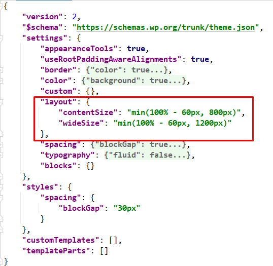
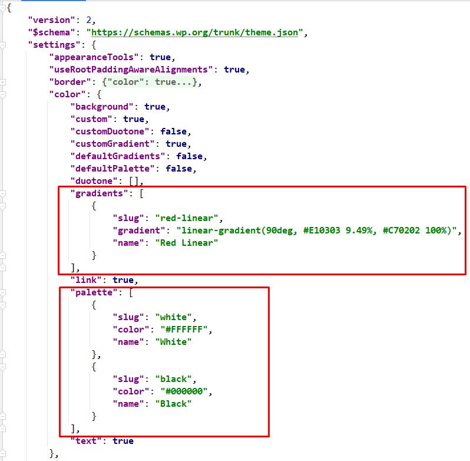
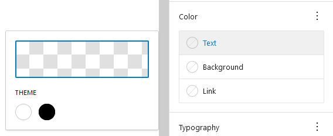

Данный старт-шаблон использует блочную систему построения, по этому для начала нам нужно настроить style guide будущей темы сайта.
P.S. Такой способ настройки темы, позволяет нам одинаково отображать контент как на фронтенде, так и в бекенде (Gutenberg)
1. Настройка файла theme.json
1.1 Настройки ширины блоков settings.layout
-- settings.layout.contentSize var(--wp--style--global--content-size)
-- settings.layout.wideSize var(--wp--style--global--wide-size)
Например: Переменные можно использовать для построения глобального контейнера для блоков settings.layout.wideSize, и для дефолтного контента постов settings.layout.contentSize
P.S. в файле scss/_variables.scss переменные уже объявлены для большего удобства!
1.2 Настройки цвета settings.color.palette, settings.color.gradients
Эти настройки позволяют изменять/пользоваться палитрой цветов сразу на фронтенде и бекенде!
Для получение переменной цвета --wp--preset--color--{slug}
Для получение переменной градиента --wp--preset--gradient--{slug}
P.S. в файле scss/_variables.scss для удобства использования переменных CSS, можно их объявить в переменные SCSS!
Например:
// Colors
$white: var(--wp--preset--color--white); // #FFFFFF
$black: var(--wp--preset--color--black); // #000000